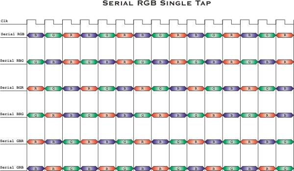

CameraLink for Color Cameras in Base Configuration
Parameter Set
Description
The feature CameraLink enables the adaptation of the hardware applet to the data format delivered by your camera.
To receive correct image data from your camera it is crucial, that the camera output format matches the selected framegrabber input format. Most cameras support different opperation modes. Please, consult the manual of your camera to obtain the nescesary information, how to configure the camera to the desired data format. Basically a non-matching camera configuration results in a time-out.
Parameters
Input Format (Camera Link standard)
Since the choice of the Applet already determines whether the medium camera format is gray or color, the Input Format parameter gives only options for the amount of bits per pixel.
For color cameras the CameraLink standard defines a single input mode:
| Input Format (Camera Format) |
Valid Bits / Pixel (internally) |
Output Format |
| [Bit/Component] | ||
| RGB 1x24 (8bit/component) | 24 | RGB24 (or RGB48) |
Non-Standard Input Formats
Some color cameras can be configured to output more than 8bits/component based on Camera Link base configuration by violating the Camera Link standard. Supported are the following non-standard modes:| Input Format (Camera Format) |
Valid Bits / Pixel (internally) |
Output Format |
| [Bit/Component] | ||
| RGB 3x8 (Serial Rgb, 8 bit/component, Single Tap) | 24 | RGB24 (or RGB48) |
| RGB 3x10 (Serial Rgb, 10 bit/component, Single Tap) | 30 | RGB24 or RGB48 |
| RGB 3x12 (Serial Rgb, 12 bit/component, Single Tap) | 36 | RGB24 or RGB48 |
| RGB 3x14 (Serial Rgb, 14 bit/component, Single Tap) | 42 | RGB24 or RGB48 |
| RGB 3x16 (Serial Rgb, 16 bit/component, Single Tap) | 48 | RGB24 or RGB48 |
| RGB 2x16 (Serial Rgb, 8 bit/component, Dual Tap) | 24 | RGB24 or RGB48 |
| RGB 2x20 (Serial Rgb, 10 bit/component, Dual Tap) | 30 | RGB24 or RGB48 |
| RGB 2x24 (Serial Rgb, 12 bit/component, Dual Tap) | 36 | RGB24 or RGB48 |
The Serial RGB mode transfers the color components sequentially. Therefore the resulting bandwith is only 1/3 for serial RGB single tap, and 1/2 for serial RGB dual tap.
While choosing a Serial RGB mode, it is possible to change the order of the three color components using the parameter field Serial RGB Mapping. For example the order can be changed from RGB to BGR. Following you find a summary of all possible permutations illustrated (for single tap and for dual tap separated):

The output format of your frame grabber can be selected indepently from the input format.
Output Format
For color cameras there are two options for the output format. Either RGB 24 (8 bit per color component), or RGB 48 (16 bit per color component) are transefered through the PCI bus into the frame buffer of your PC. The output format of your frame grabber can be selected indepently from the input format from the camera.
To safe bandwidth at the PCI bus it might be desirable to use a 24 bit / pixel output mode, even in conjuction with a camera delivering more than 24 bits / pixel. The Knee Lookup Table could make this a satisfying option, since it is possible to map a 10 bit / component input non-linearily to a 8 bit / component output -- map only desired information to 24 bit / pixel.
Use DVAL
By default this parameter is set to "Yes" and shouldn't be changed.
Some rare cameras do not comply to the CameraLink standard and keep the "DVAL"-signal constantly low, even while transmitting valid data. In this case you could try to set the parameter to "NO".
Pixel Depth
The pixel depth delivers the information of the number of valid bits / pixel. E. g. when using a 10 bit / pixel camera and a 16 bit / pixel output format with right-alignment, then Pixel Depth = 10 to indicate that the lower 10 bit of the 16 bit value cover the pixel.
The pixel depth parameter can't be changed manually.
References
| Forward |